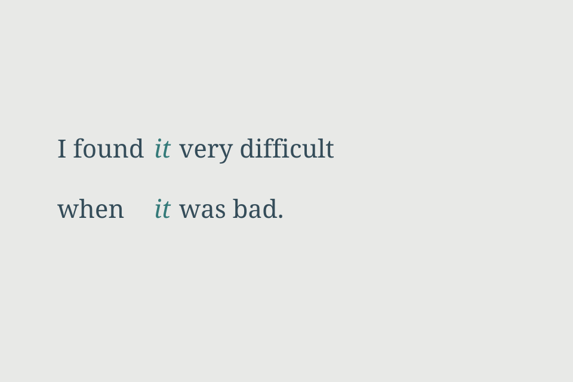

Axis Without Rule
The repeated word holds an axis without a line telling us what it refers to.

The wording came from an inbox note that attributes it to Chelsy Davy. I have not verified the attribution or its context. This typographic arrangement is mine.